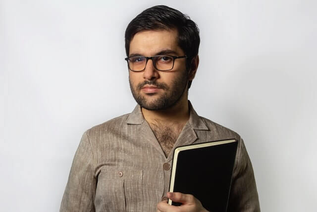
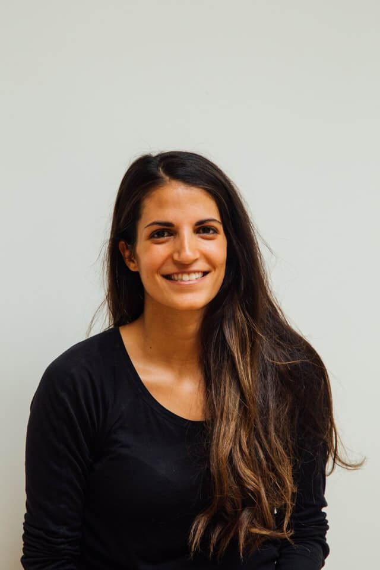

Les professionnels qui vous accompagnent
Nous agissons et mobilisons notre réseau pour transcender votre potentiel !
Les fondatrices
Vous êtes accompagnés par des professionnelles issues du social et médico-social.
Vivre plus sereinement son travail c’est possible !!!
Mme Stéphanie KRYSTLIK, Présidente
Stéphanie KRSYTLIK est éducatrice spécialisée de formation initiale avec une expérience significative de la protection de l’enfance et notamment de l’accompagnement des familles (AEMO) et des adolescents en grande difficulté (prévention spécialisée, MECS).
Elle exerce depuis plusieurs années en tant qu’Analyste clinicienne des pratiques auprès d'équipes, superviseuse et formatrice.
Ses références théoriques sont multiples : psychanalyse, psychosociologie, thérapie sociale, systémie et pédagogie. Dans les groupes d’analyse de pratique ou dans les supervisions, elle accompagne les professionnels et les équipes à cheminer et à trouver eux-mêmes des réponses à leurs difficultés où à leurs questionnements.
Diplômes
Diplôme d'état d’éducatrice spécialisée, Master en sciences de l'éducation : Formation à l'Intervention et à l'Analyse de Pratique, 1 an de formation en thérapie familiale systémique.
“Je mets en place des groupes d’analyse de pratique clinique d’orientation psychanalytique s’inspirant des groupes Balint. J’utilise une pédagogie active favorisant l’implication personnelle, s’appuyant sur la dynamique du groupe et développant une analyse groupale de situations professionnelles vécues.”
Mme Aïcha LAMALCHI, Directrice Générale
Une professionnelle engagée depuis plus de 20 ans auprès de différents publics en situation de vulnérabilité ou en très grande difficulté, notamment dans le champ du handicap et de la protection de l’enfance au sein de différentes institutions.
Mes champs d’intervention :
- Intervenante de groupe d’analyse des pratiques auprès de travailleurs sociaux (ME/ES/ASS)
- Expériences éprouvées dans l’accompagnement de VAE (BEPJEPS/ES/EJE)
- Conception et animation de formations dans le secteur de l’aide à domicile (DEAVS/ADVF/IHVAD/AEPE)
- Participation jury, guidance mémoire
Diplômes
- D.E.I.S : Diplôme d’État d’Ingénierie Sociale
- Master 2 : Sciences Humaines et Sociales – Mention Intervention et Développement Social/Paris-CNAM
- Diplôme d’État Éducatrice Spécialisée
- Diplôme d’État d’Auxiliaire de Puériculture
“Suite à une reconversion professionnelle, je me suis orientée à 28 ans dans le secteur de la petite enfance en qualité d’Auxiliaire de Puériculture sein de crèches et de pouponnières à caractère social. Puis vers l’enfance en danger en tant qu’éducatrice spécialisée au sein de MECS (jeunes dits "borderline") et au sein d’ITEP (enfants souffrant de trouble du comportement). Puis enfin, une expérience de direction d’un centre social au sein d’une collectivité pour laquelle j’ai réalisé un diagnostic des dysfonctionnements institutionnels au sein de trois centres sociaux.”
Les formateurs
Notre réseau est composé de professionnels qui partagent nos valeurs.
Qui ont au minimum 5 ans d’expériences professionnelles dans l’accompagnement de personnes vulnérables dans le secteur social ou médico-social.
Lucas
Aïcha
Stéphanie
Alexia
Samy